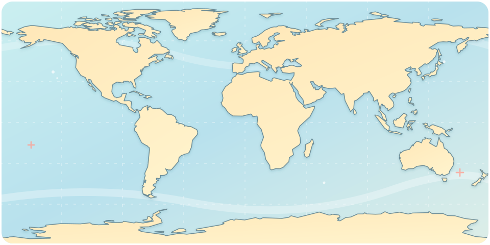

今日も一日、おつかれさま。
今夜は、ひと言だけ読む世界の「まさか」劇場気になる絵から読む
各画像は記事をもとに制作した創作イメージです。ニュース現場の写真ではありません。
世界を旅する配信国マップ・国紹介・小旅行・写真クイズ
WORLD LETTER · ON THE MAP
配信国マップ

COUNTRY PORTRAIT · 国の魅力
地図の下にある国名をタップすると、名所や文化を知る写真付き3択クイズを楽しめます。
WORLD QUIZ · へぇ！3択
掲載国の代表位置を示します。ニュースの発生現場ではありません。
ニュースがなくても、世界を旅する
配信国マップとは別に、出典と写真を確認して公開承認した国だけを紹介します。国を選ぶと、実写真・文化・歴史の小旅行と写真付き3択クイズを楽しめます。
国の一覧を読み込み中…
今夜のひと話
国・地域を確認中
世界の実話を準備中…
起きたこと
何が起きたのか、まず短く。
AIツッコミ
創作の冗談人間のやらかしに、AIが鋭くツッコミます。
今夜の「それ、本当に!?」
読み込み中世界の人間の失敗談に、一読で笑えるAIツッコミを。
このカテゴリの記事はありません。
オフライン表示中です。保存済みの号を表示している場合があります。最新の記事はネットに接続してから確認してください。
公開号を読み込み中事実確認済みの記事を準備中です
最新の公開号を確認しています…
配信日・報道期間について
「配信日」はこの号を届ける日です。記事が起きた日や報道された日とは異なります。
日本時間を確認中